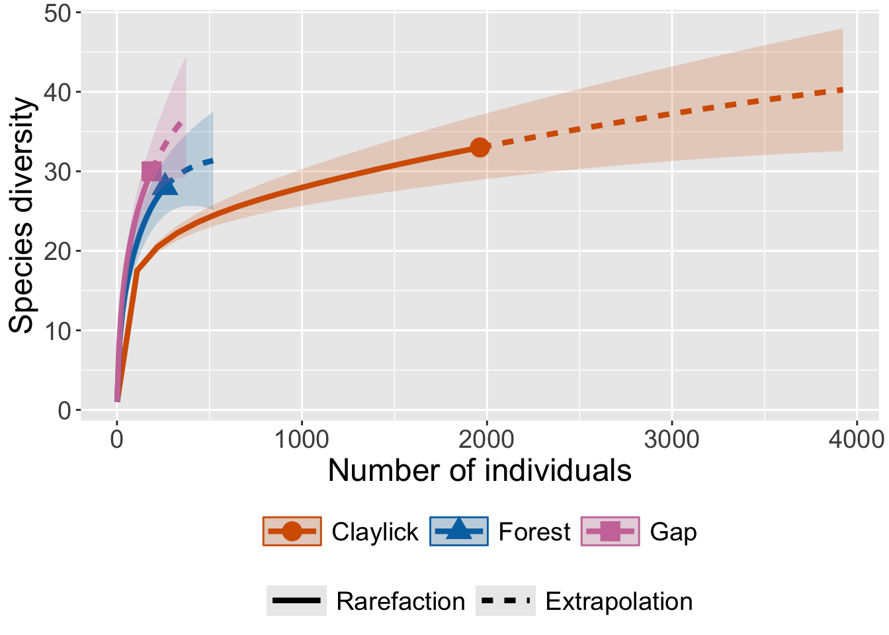
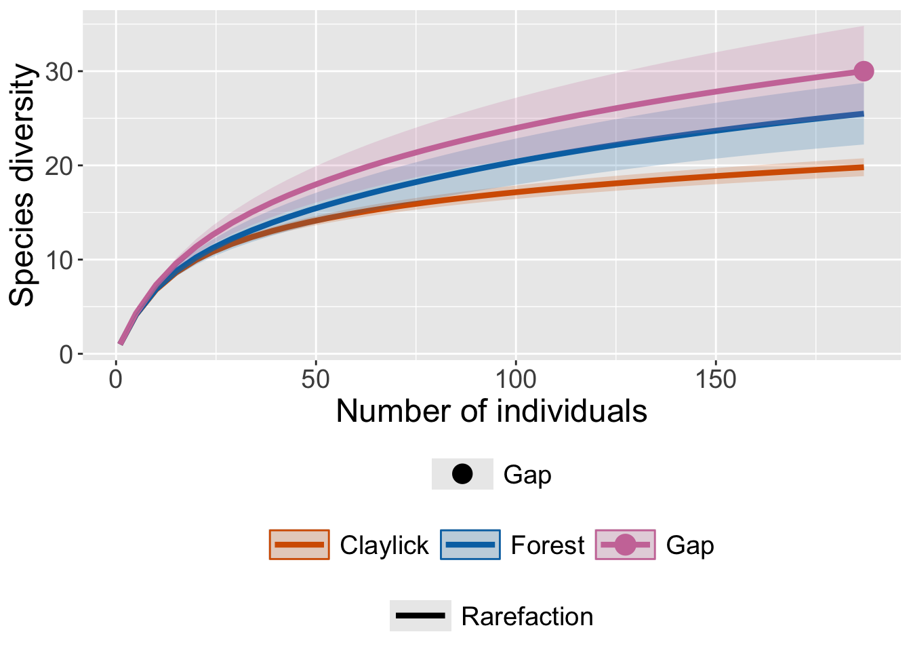

Bat diversity at clay lick, forest, and gap microhabitats in Western Amazonia
In the Peruvian Amazon, we conducted a study on bat diversity at the Los Amigos Conservation Concession in Madre de Dios (Bravo et al. 2008, Bravo 2009). We deployed mist nets to capture live bats in sites within three microhabitats: clay licks, forest, and gaps. We identified each bat to the species level and collected biometric data. After the data were recorded, we released the bats back into their respective microhabitats to ensure minimal consequences to the bats from their capture.
In this exercise, you will investigate bat diversity across clay lick, forest, and gap microhabitats. More specifically, you will compare bat data sampled from these microhabitats using a rarefaction analysis, which estimates the number of species expected for a given number of individuals in each microhabitat. We deployed mist nets in three different sites within each of the three microhabitats in three years, but for this exercise we aggregated the data for each microhabitat and across years.
To perform the analysis, you will use the iNEXT (iNterpolation and EXTrapolation) R package, as described by Hsieh et al. (2016). This package enables the interpolation and extrapolation of species diversity, providing a robust method for comparing bat diversity among the different microhabitats.
iNEXT estimates three measures of species diversity corresponding to Hill numbers (qD, where q is referred to as the “order” of the Hill number): 0D, 1D, and 2D. For this exercise, we will use species richness, which corresponds to 0D (Hill number of order zero).
Authors
Adriana Bravo & Kyle E. Harms
1. For this exercise, you will use the abundances of each bat species captured at clay lick, forest, and gap microhabitats. For each species of bat, the bats captured in each microhabitat represent a sample of the population from that microhabitat.
Run this line of R code to see the dataset named “bats”. Quarto enables you to weave together content and executable code into a finished document. To learn more about Quarto see https://quarto.org.
This dataset shows the abundances for 47 bat species across three microhabitats: Claylick, Forest, and Gap. Each number is the abundance for a particular species in a particular microhabitat, i.e., the number of individuals of a species that was recorded from a particular microhabitat. Note that if a species was absent from a particular microhabitat, its abundance was recorded as zero.
1. Next, run this line of R code to generate a summary of the data.
This summary output includes: the sample size (n, i.e., the total abundance or number of bats captured in a particular microhabitat); the observed species richness (S.obs) for that microhabitat; sample coverage estimate (SC, which we are not going to make use of in this exercise), representing the completeness of a sample; and the first ten frequency counts (f1-f10), representing the numbers of species with 1, 2, 3, up to 10 individuals in each microhabitat.
Based on this information, answer the following questions:
a) Which of the three microhabitats has the largest sample size (i.e., total abundance)? Explain.
b) What is the observed species richness at clay lick, forest, and gap microhabitats, respectively?
c) Based on the observed species richness values, can you conclude that clay licks are more diverse than forest and gap microhabitats? Explain.
d) What proportion of species in each microhabitat is represented by one individual? By two? Explain.
e) Are rare species (i.e., species represented by only one or two individuals) common in the bat assemblages of the study area? Explain.
1. Next, you are ready to run the R code for the rarefaction analysis!
This analysis estimates the expected number of species (i.e., species richness) for a given number of individuals in each microhabitat. Using the observed species’ abundances (i.e., bats captured in the field within each microhabitat), iNEXT estimates species richness expected for any given total number of bats of all species captured, with the associated 95% confidence intervals. As default, iNEXT uses the Hill number of order zero (q=0, or 0D) that measures species richness.
The output includes a summary of the data followed by a data frame named $size_based. This data frame contains the assemblage (or microhabitat) name, sample size (m), and method (Rarefaction, Observed, or Extrapolation, depending on whether m is less than, equal to, or greater than the observed sample size). It also reports the diversity order (order.q; q=0 for species richness), the corresponding diversity estimate (qD; species richness when q=0), the 95% confidence intervals (qD.LCL, qD.UCL), and the sample coverage estimate (SC) with its 95% confidence limits of sample coverage (SC.LCL, SC.UCL).
Based on this information, answer the following questions:
a) What is the species richness for a sample size of one within the clay lick, forest, and gap microhabitats, respectively?
b) What is the species richness, along with the 95% confidence intervals, for the sample sizes and microhabitats indicated in the table?
Site
Sample size
Species richness
Upper confidence interval
Lower confidence interval
Clay lick
981
Clay lick
1962
Forest
130
Forest
260
Gap
93
Gap
187
c) Based on the table above, could you draw any conclusions about whether one site is more diverse than another? Explain.
4. Next, run the following R code to plot rarefaction curves for the three microhabitats based on this analysis.
ggiNEXT(rarebats, type=1)
Warning: `aes_string()` was deprecated in ggplot2 3.0.0.
ℹ Please use tidy evaluation idioms with `aes()`.
ℹ See also `vignette("ggplot2-in-packages")` for more information.
ℹ The deprecated feature was likely used in the iNEXT package.
Please report the issue at <https://github.com/AnneChao/iNEXT/issues>.

This plot shows estimates of species richness, with confidence intervals, as a function of sample size for each microhabitat. Each curve represents species richness estimated using rarefaction (solid line) and extrapolation (dashed line).
Based on the plot, answer the following questions:
a) Is the relationship between number of individuals and species richness positive?
b) Is this relationship linear?
c) Is the rate of increase in species richness with the number of individuals constant?
d) Why is the rate of increase in species richness per individual higher at smaller sample sizes than at larger ones?
e) In a natural community, would you expect a constant rate of increase in species richness as a function of the number of individuals? Explain.
1. Next, run the R code to compare estimated diversity among microhabitats for a standardized sample size of up to 187 individuals. This corresponds to the observed total abundance of all species of bats (i.e., total sample size) for the gaps, which is the smallest among the three microhabitats.
The output includes a date frame with estimates of species richness with 95% confidence intervals for sample sizes up to 187 individuals.
a) What is the species richness, along with the 95% confidence intervals, for the following numbers of individuals at the three sites?
Site
Sample size
Species richness
Upper confidence interval
Lower confidence interval
Clay lick
91
Clay lick
187
Forest
91
Forest
187
Gap
91
Gap
187
6. Run the following R code to generate a plot of the rarefaction results.
ggiNEXT(rarebats1, type =1)

The plot shows species richness estimates, with confidence intervals, as a function of sample size up to 187 individuals. Based on the table above and this plot, answer the following questions:
a) Which microhabitat has the highest estimated species richness for 187 individuals?
b) Which microhabitat(s) is/are the most diverse in terms of species richness? (Hint: use the confidence intervals to guide your decision.)
c) Which microhabitat is the least diverse among the three? Do its confidence intervals overlap with those of the other microhabitats?
d) Do the estimates for 187 individuals differ from the observed species richness across the three microhabitats? (Hint: refer to the summary table of the full data set.)
e) Why is it important to compare species richness across microhabitats using the same number of individuals? Explain
References
Bravo, A., K. E. Harms, R. D. Stevens, and L. H. Emmons. 2008. Collpas: activity hotspots for frugivorous bats (Phyllostomidae) in the Peruvian Amazon. Biotropica 40:203–210.
Bravo, A. 2009. Collpas as activity hotspots for frugivorous bats (Stenodermatinae) in the Peruvian Amazon: underlying mechanisms and conservation implications. Ph.D. dissertation, Louisiana State University.
Hsieh, T.C., K. H. Ma, and A. Chao. 2016. iNEXT: An R package for interpolation and extrapolation of species diversity (Hill numbers). Methods in Ecology and Evolution 7: 1451-1456.